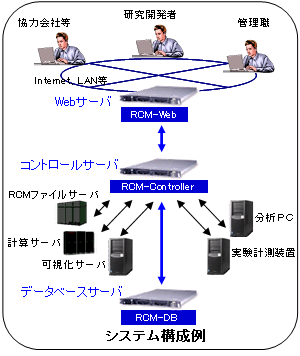

研究フロー統合管理システム 『 RCM System Software 』
概要
RCM(R&D Chain Management) System Softwareは、大規模データ処理に直面する研究者の方に、より高い次元の研究活動を行っていただくための研究開発基盤を構築可能な、多機能 Web
サービスミドルウェアです。
RCM-Web, RCM-Controller, RCM-DB の 3 つのソフトウェアから構成されています。
特長
- 基幹部分すべてに XML 技術を採用することで、データベースからユーザーインターフェイスまで柔軟に、且つ短期間に構築・再構築。
- 独自開発の XmlViewer により、複雑かつ膨大な情報を直感的に、よりフレキシブルに閲覧・編集。
- 研究フローの変更を前提としたワークフロー機能により、自動化とシステム構築に柔軟に対応。
- 高度なソート機能により、過去のデータを有効活用し、研究者のひらめきをサポート。
- 権限機能を活用し、研究環境をそのまま個人研究メモ、情報共有システム、情報公開システムという複数の役割を同時に実現。
- 過去の作業をトレーシングし、研究の再現性と信頼性を向上。
導入実績（順不同敬称略）
東京大学 大阪大学 兵庫県立大学
日本原子力研究開発機構 国立天文台 防災科学技術研究所 高エネルギー加速器研究機構
宇宙航空研究開発機構 情報・システム研究機構 計算科学振興財団 情報通信研究機構
パナソニック株式会社 株式会社神戸製鋼所 川崎重工業株式会社 新日本製鐵株式会社